[1] "/Users/rdeek/Library/CloudStorage/OneDrive-UniversityofPittsburgh/Documents/teaching/PUBHLT0411"Module 0: Hello World! Syllabus and basics
PUBHLT0411: Statistical Packages for Public Health Data Analysis
Rebecca Deek, PhD
University of Pittsburgh, Biostatistics and Health Data Science
Teaching team
#FIXME
Instructors:
- Dr. Rebecca Deek - rdeek@pitt.edu
- Office hours: TBD (Until 10/2/2026) & by appointment.
- Dr. Soumik Purkayastha - soumik@pitt.edu
- Office hours: TBD (From 10/5/2026) & by appointment.
Course assistant
- TBD
Syllabus
What you will (and won’t) learn in PUBHLT0411
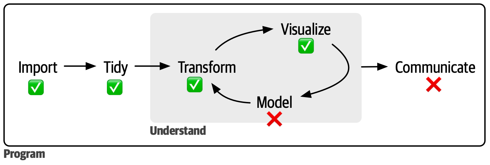
- Model: PUBHLT 0412 and 0413
- Communicate: PUBHLT 0410, 0412, and 0413
Coding + AI = …?
- What is defined as AI?
Language models
“We have tools that are way more powerful than any we’ve seen before. But there’s also a long way to go toward really getting the full promise of automation that we would expect.”
Vibe coding with AI
- There are many scenarios that AI can help with coding.
- It is important to have strong coding skills to understand where AI can produce errors/bugs, verbose code that can be made more efficient, or even hallucinates.
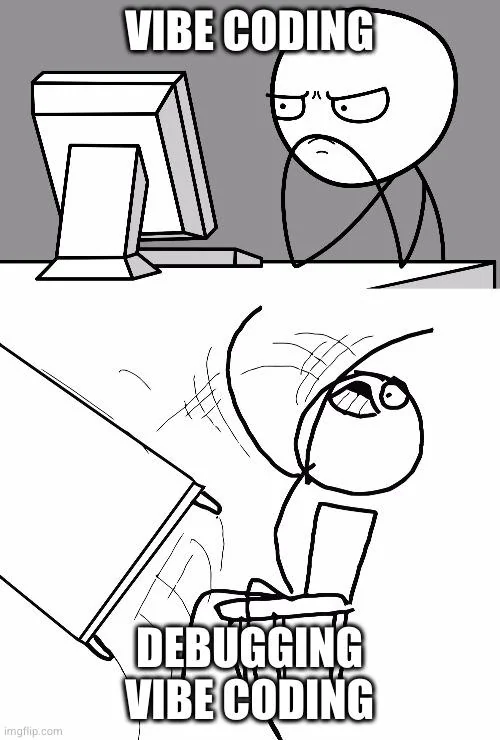
R programming
- Common statistical programming language used by (bio)statisticians and data scientists.
Pros:
- Powerful, flexible, free.
- Open-source scripting language (unlike STATA/SAS).
- Active community.
- Help documentation and tutorials.
Cons:
- Syntax learning curve.
- No central support/core distribution.
- Potentially outdated packages.
- Not always fast.
- Not as well developed for deep learning/massive data.
RStudio
- RStudio is an Integrated Development Environment (IDE).
- A software application that provides a comprehensive set of tools for programming and software development.
- Simplifies programming for statistics and data science.
- It will make your life easier.
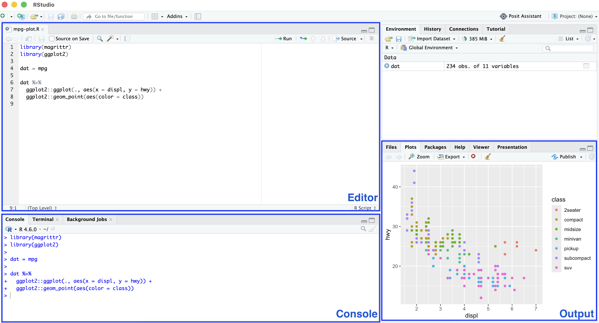
Organization
- Good programming starts with good organizational skills.

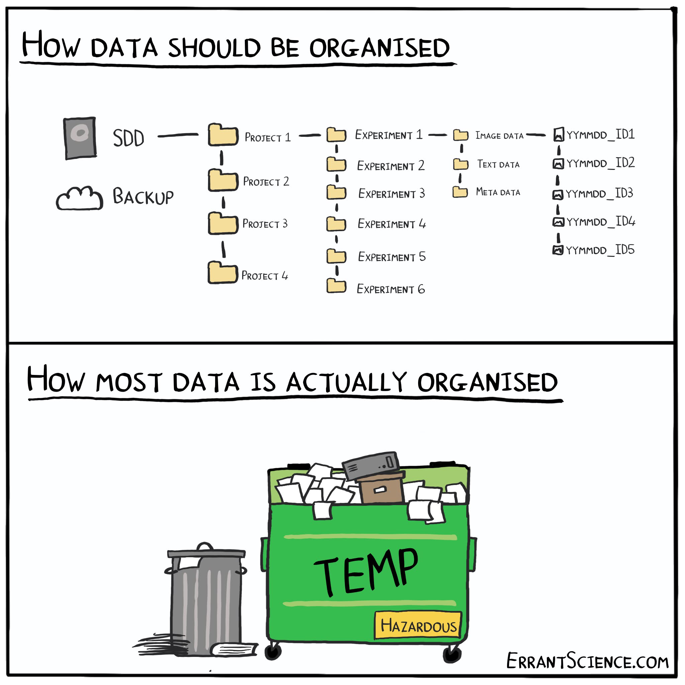
Organizing your code: Part I
- Code is case sensitive.
- No autocorrect.
- Programming tools don’t like spaces in object or file names, switch to underscores, dots, or camel case.
- this_is_snake_case
- THIS_IS_SCREAMING_SNAKE_CASE
- this-is-kebab-case
- Cannot be used for naming objects in R.
- this.is.dot.case
- thisIsCamelCase
- tHis.isNOT_a.ConvenTIoN
Organizing your code: Part II
- Similarly programming tools don’t like special characters. Avoid !@$%^&* and the like.
- Object names should be informative.
- model1, model2, data.new, data.old are not informative.
- model.unadj, model.adj, datasetName.rmAge, boxplotAge are more informative.
- Complex naming conventions require strong regex skills.
- If you don’t know what regex is… fear not… but your naming conventions should be informative and simple.
Organizing your files
- In the wise words of Jenny Byran, file names should be:
- Machine readable.
- Human readable.
- Sorted in a useful way.
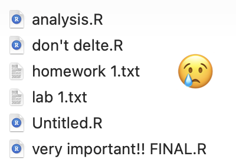
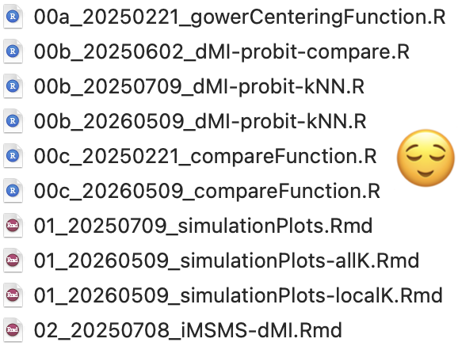
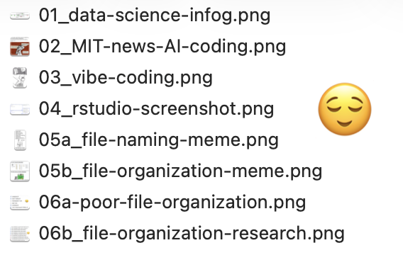
Why you should care
- Extensive commenting will save you a lot of time, trouble, and frustration.
- Your worst enemy in programming is you six months ago.
R scripts
- Files that contain R code (and comments) are called R scripts.
- You can write code in the console but it’s not suggested unless it’s a quick and minor task (that you don’t want to repeat again).
- Otherwise use an R script for more reproducible science:
- Maintains a record of your analysis, including data manipulation, visualization, and statistical analysis.
- Can share code (and data) with others, including collaborators and journals.
- .rmd (R) and .qmd (Quarto) markdown files intertwine R code and plain text language (more in a few slides).
R Projects
- We will start this course by using data that is already loaded into R. But eventually you will in access data files on your computer.
- Sooner than that you will need to access the files I create for you (lectures, labs, etc.)
- A “working directory” is where R looks for files that you ask it to load.
- My default working directory is
"/Users/rdeek".
- My default working directory is
- Keeping all the files associated with a given project (data, R scripts, results, figures, etc.) in one directory is a wise and common practice.
- RStudio has R projects that help with this.
- Avoids manually setting the working directory with
setwd() - Facilitate the use of relative paths like
data/dataFileName.csv.- If I share code and data with you as long as we both have a project and data folder, the code will run without errors.
- Avoids manually setting the working directory with
- RStudio has R projects that help with this.
Directory setup for PUBHLT0411
- Non-negotiable:
- A folder named “PUBHLT0411”.
- An .Rproj with the same name saved in it.
- A “data” subfolder.
- A folder named “PUBHLT0411”.
- Suggested (if you want to reduce frustration):
- “lecture” subfolder.
- “lab” subfolder.
- “final-project” subfolder.
Qmd/Rmd
- A Quarto Markdown file (.qmd) is a plain-text document that combines plain text, executable code chunks, and formatting metadata.
- All lectures and labs will be completed in .qmd files.
- Similar to Rmarkdown (.rmd) but next generation.
- Three main components:
- Metadata: YAML formatting.
- Plain text: Markdown.
- Markdown is a plain text format that is designed to be easy to write and read. Learn more about Markdown basics.
- Code: Executed via
knitrorjupyter.
R packages
- R stores numerous packages that contain functions and datasets that others can use.
- Packages are the fundamental unit of shareable code.
- Some packages come preinstalled and loaded (e.g.,
base). - Others needs to be installed and loaded (in that order).
packmanis a package, which needs to be installed and loaded, that bundles installation and loading of other packages.
Time to code!!!
R can be used as a calculator
R can be used as a calculator
Objects in R
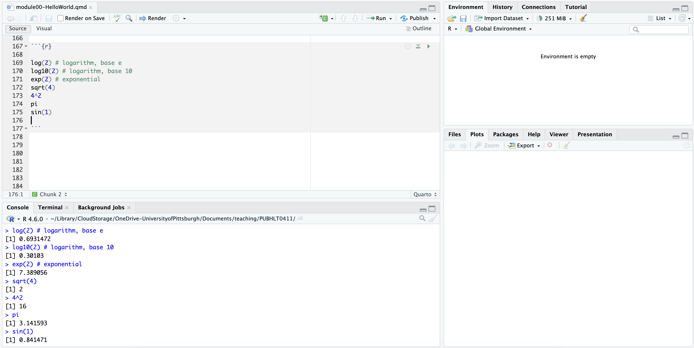
Assigning values to objects in R
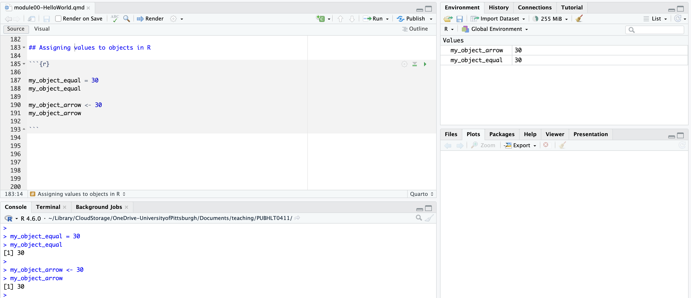
Different types of objects
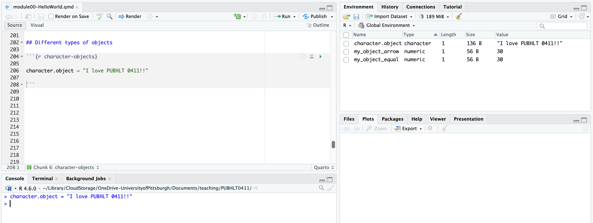
Aside: Start with a blank workspace
- Every time you close RStudio it will prompt you to decide if you want to save your environment. You should always select no.
- Helps with reproducibility and preventing old mistakes from spilling over.
- Alternatively, you can turn this off in your settings (Tools > Global Options)

Operations with objects
- Writing over objects.
Operations with objects
- Concatenate scalars into vectors of length \(<1\).
c()is what we call a function.
Functions
- R has built in functions, which take the form:
Missing data and functions
Additional functions
seq()andrep()
[1] 1 2 3 4 5 6 7 8 9 10 [1] 1 2 3 4 5 6 7 8 9 10Exercises
How should the code below be corrected?
1)
Error:
! object 'firstobj' not found2)
3)
Error in parse(text = input): <text>:1:28: unexpected symbol
1: character.object.error = I love
^That’s all… until Thursday.
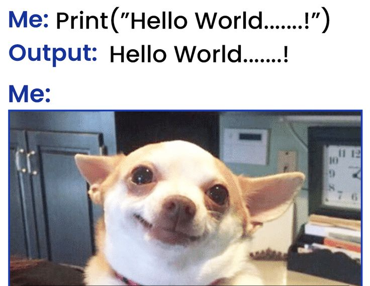